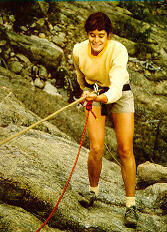

Climbing Lessons
Here at The Colorado Experience we provide several levels of climbing instruction,
all tailored to your individual strengths, interests and comfort levels. You
can start your lessons on small one and two pitch climbs and move up to larger
routes. We cover everything from working with hand and footholds to working
with ice axes. Lessons are always under the watchful and encouraging eye
of an experienced instructor. Special instruction is also available for
those with special physical needs or requirements.
NOTE: Students may be removed from the courses for safety reasons at any
time based on the discretion of the instructor. Partial refunds available
for any uncompleted courses.
Introduction to Rock Climbing I
This course covers the basics of rock climbing and climbing equipment. You'll
learn about:
- Harnesses, ropes and safety rules
- Basic hand and foot holds
- Types of climbing equipment and their uses
- First aid techniques
- Climbing ethics
Time: half day
Prerequisites: None
Rating: 5.5 - 5.6
Introduction to Rock Climbing II
This course continues the instruction from Rocking Climbing I. The course covers
- One and two pitch climbs
- Rappelling
- Placing and removing climbing equipment
- Intermediate hand and foot holds
- First aid techniques
Time: 1 day
Prerequisites: Basic climbing experience or Introduction to Rock Climbing I
Rating: 5.6 - 5.7
Intermediate to Advanced Climbing
This course covers techniques for mid to large scale climbs. Prospective
students need to display significant climbing proficiency and knowledge. Techniques
taught include:
- Leading a climb
- Working with multipitch climbs
- First aid techniques
Time: 2 days
Prerequisites: Consent of instructor after climbing evaluation
Rating: 5.8-5.9
Aid Climbing
This course covers the technique of aid climbing. Climbing proficiency is required.
Course topics:
- Basics of aid climbing
- Tools of aid climbing
- Working with ice axes and crampons
Time: 2 days
Prerequisites: Consent of instructor after climbing evaluation
Rating: A1-A3
Ice Climbing
This course covers the technique of ice climbing. Some climbing experience
is required. Note that this course is only offered from December to January,
and only when weather and ice conditions permit. Course topics:
- Ice climbing tools and techniques
- Ice climbing hazards
- First aid
Time: 1 day
Prerequisites: Consent of instructor after climbing evaluation